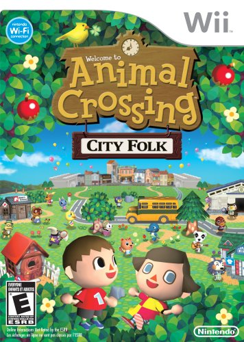

Wild World
The next main Animal Crossing is Animal Crossing: Wild World. It was released on the Nintendo DS in 2005. As with the previous game and all other games, you develop your own town while socializing with your animal villagers. Compared to the previous release, there is a lot more character customization. This game is also the first in the series to utilize online play using Nintendo WFC. The previous game would have a top-down view, but since Wild World is on a dual-screen system, you can use the touch screen to write messages, organize your inventory, and more.
City Folk
The third main game is Animal Crossing: City Folk, released on the Wii in 2008. In previous iterations, when you would have other profile, all those people will live in the same house. This is the first game in the series to allow players on the same game to live in separate houses. You will also be able to create patterns that are different on several sides (such as making a shirt) called "pro designs." In addition, Tom Nook will allow you to pay your mortgage off a little bit at a time instead of all at once. Another new addition is the city, which you can take by bus, and you can do a variety of things here, including buying clothes and getting a new hairdo. This Animal Crossing was considered one of the best-selling games for the Wii console.